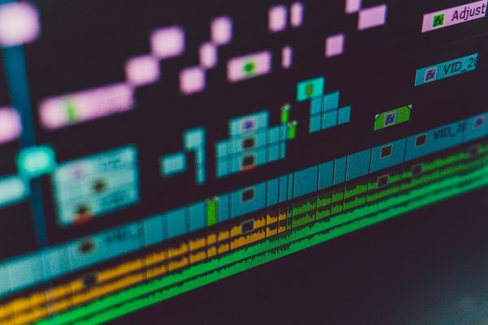

Frontier models can watch a clip. They can't find a moment.
MomentBench measures whether a system can locate an exact moment — the right video, the right four seconds — across a growing multimodal corpus (target: 75 hours). Each query has an author-authored gold in/out timestamp; some include explicit hard negatives. Every result is reproducible from the open harness.
Leaderboard
Frontier models average 83% on single-condition clips and <35% once the same query must beat 40 hard negatives across the corpus.
Queries that join audio and visual conditions ("crowd goes quiet before the gavel") cut every context-stuffing baseline roughly in half.
A decompose → store → retrieve pipeline holds 74% at tier 3 — the gap is architectural, not a model-size problem.
Failure gallery
Methodology

Target: 75 hours across three verticals — government proceedings, aerospace & field operations, and archival film. Current seed release: 9 assets. Every asset is public domain or CC BY, with a machine-generated attribution manifest. Corpus is actively growing — see the repo.
T1 single-condition visual · T2 cross-modal joint conditions · T3 corpus-scale with explicit hard negatives · T4 temporal reasoning. Target: 500 queries. Current seed release: 9 queries (6 author-authored, 3 model-annotated pending human review), growing.
A hit requires the correct asset and temporal IoU ≥ 0.5 against the gold in/out points. We report Recall@1, Recall@5, and mean temporal IoU per tier.
The harness, public query set, and model adapters are open source. A private held-out contamination-guard set is planned for a future release, not yet live.